GitHub으로
인터넷에 올리기.
준비된 예제 파일을 GitHub Pages에 올리면 누구나 열어 볼 수 있는 내 링크가 생기게 됩니다. 예제 파일 두 개를 직접 올려보면서, 직접 만든 파일을 올릴 때 막히는 곳까지 같이 짚어보겠습니다!
index.html 이면 생략해도 열립니다.단계마다 이 주소를 한 조각씩 만들어 가게 됩니다. 그리고 4단계(Pages)에서 이 주소를 실제로 켜게 됩니다.
GitHub 화면은 영어로 되어 있습니다. 크롬이 “이 페이지를 번역할까요?” 하고 물어보면 번역하지 말아주세요. 번역하면 버튼 이름이 사진과 달라져서 오히려 더 헷갈리게 됩니다.
누르는 버튼은 몇 개 되지 않고, 앞으로 파일을 올릴 때도 같은 버튼을 계속 누르게 됩니다. 그래서 처음부터 영어 이름으로 익혀두시는 편이 훨씬 편합니다. 아래 단어만 알아두시면 충분합니다^^
Repository저장소 (파일을 넣어두는 방)Create new file새 파일 만들기Upload files파일 올리기Commit changes이대로 저장(확정)하기Settings설정 (저장소 안의 톱니바퀴)Pages인터넷에 공개하는 기능Save저장Public공개 (누구나 볼 수 있음)index.html 로 정하고, 이 파일은 주소만 쳐도 바로 열립니다. (1~5단계)hello.html 을 이름 그대로 올리고, 주소 끝에 /hello.html 을 붙여 찾아 들어갑니다. 직접 만든 파일을 올릴 때 가장 많이 막히는 곳이라 미리 연습해보는 것입니다. (6단계)GitHub 가입하기
내 이름으로 된 GitHub 공간을 만들어보겠습니다! 여기서 정한 아이디가 주소 맨 앞 아이디.github.io 가 됩니다.
- 주소창에
github.com을 입력해 들어간 뒤, 오른쪽 위 Sign up 을 눌러주세요. - 개인 구글 아이디가 있다면 구글로 가입해주세요. Continue with Google 을 누르고 내 구글 계정을 고르면 이메일이 자동으로 채워지게 됩니다. 다른 계정으로 가입하시려면 Use a different Google account 를 눌러주세요.
- 아래 사진처럼 Username 과 Country/Region 을 확인하고 Create account 를 눌러주세요.
- ‘사람인지 확인’하는 퍼즐이 나오면 풀어주세요. 메일로 온 인증 코드(숫자)를 넣으라고 하면 메일함에서 확인해 넣어주세요!^^
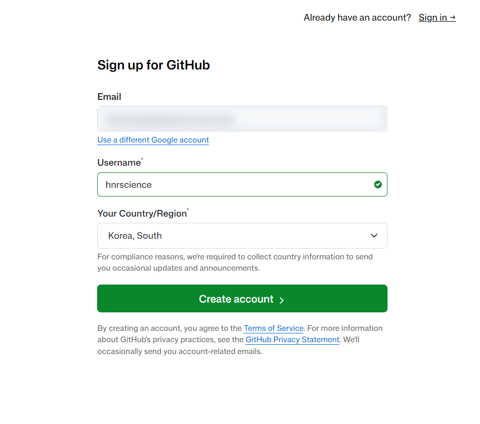
hnrscience 라면 내 주소는 hnrscience.github.io/... 로 시작하게 됩니다. 기억하기 쉬운 것으로 정하시고 꼭 적어두세요! (5단계에서 다시 씁니다.)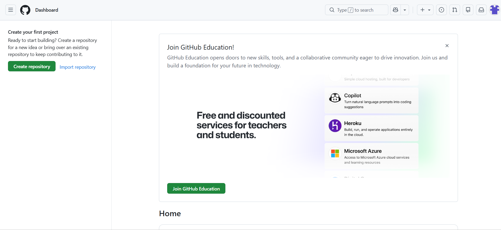
새 저장소(Repository) 만들기
파일을 넣어둘 방(저장소)을 만들어보겠습니다! 저장소 이름이 주소 가운데 /저장소이름/ 이 됩니다. 보통 사이트(작품) 하나에 저장소 하나씩 만듭니다.
여는 방법이 세 가지 있습니다. 편한 방법 하나만 골라 해주세요.
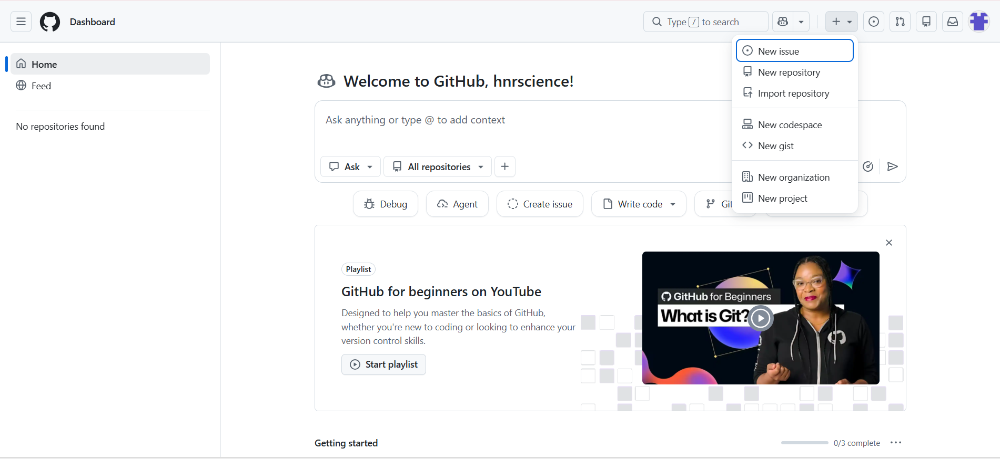
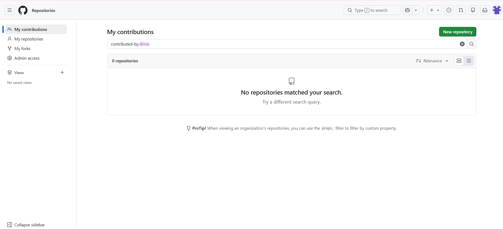
github.com/new 를 그대로 입력해주세요. 버튼을 찾지 않아도 아래 Create a new repository 화면이 바로 열립니다. 1단계 마지막 사진의 초록색 Create repository 를 눌러도 같은 화면이 나옵니다.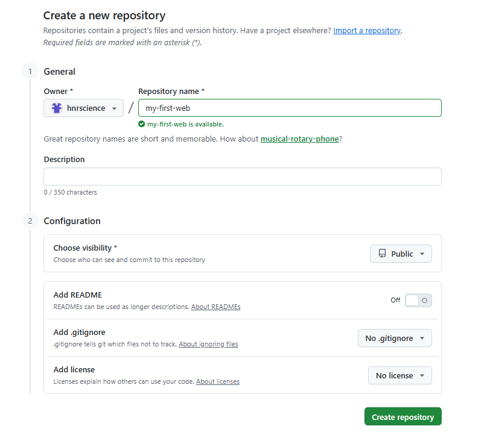
궁금하면 열기Description · README · .gitignore · license 는 무엇이고, 왜 건드리지 않나요?
README.md)이 자동으로 만들어집니다. 그러면 저장소가 빈 채로 시작하지 않아서, 3단계에서 쓰는 Quick setup 화면(creating a new file 링크)이 나오지 않고 사진과 화면이 달라지게 됩니다. 그래서 끈 채(Off)로 시작합니다. 혹시 켜셨더라도 문제가 생기는 것은 아니니, 3단계에서 Add file 의 Create new file 로 똑같이 진행해주세요.(아이디).github.io/저장소이름/ 모양이 됩니다.첫 파일 만들기 creating a new file
만든 방에 첫 웹페이지 파일을 넣어보겠습니다! 이름을 꼭 index.html 로 하는 이유는 이 단계 맨 아래에 정리해두었습니다.
첫 실습은 GitHub 안에서 새 파일을 만들고 코드를 붙여넣는 방법입니다. 파일 이름을 직접 타이핑하기 때문에 실수가 거의 없습니다.
아래 복사 버튼을 눌러주세요. 열면 축하 메시지만 뜨는 아주 짧은 페이지입니다.
<!DOCTYPE html>
<html lang="ko">
<head>
<meta charset="UTF-8">
<meta name="viewport" content="width=device-width, initial-scale=1.0">
<title>첫 배포 성공!</title>
<style>
body{margin:0;min-height:100vh;display:flex;
flex-direction:column;align-items:center;justify-content:center;
text-align:center;font-family:'Malgun Gothic',sans-serif;
color:#fff;background:linear-gradient(135deg,#5b6cf0,#7a6cf5);}
h1{font-size:2rem;margin:0 0 14px;}
p{font-size:1.2rem;opacity:.95;margin:0;}
.emoji{font-size:4rem;margin-bottom:8px;}
</style>
</head>
<body>
<div class="emoji">🎉</div>
<h1>GitHub으로 배포하기, 정말 쉽죠?</h1>
<p>선생님, 누구나 할 수 있어요!</p>
</body>
</html>저장소를 막 만들면 아래처럼 Quick setup(빠른 시작) 화면이 나옵니다. 빈 저장소에 처음 들어왔을 때만 보이는 안내 화면입니다. 파란 상자 안의 작은 파란 글씨를 찾아주세요. 그 아래 회색 상자의 명령어들(…on the command line)은 프로그래머가 쓰는 Git 명령어라서 신경 쓰지 않으셔도 됩니다.
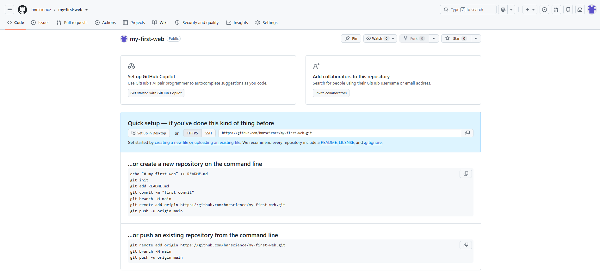
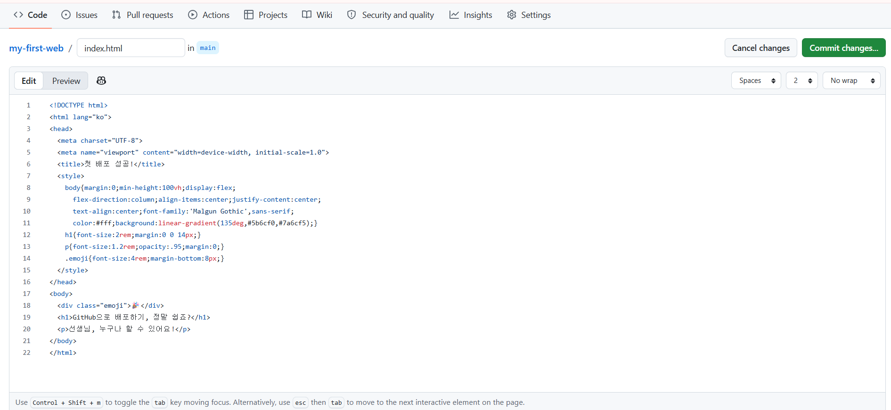
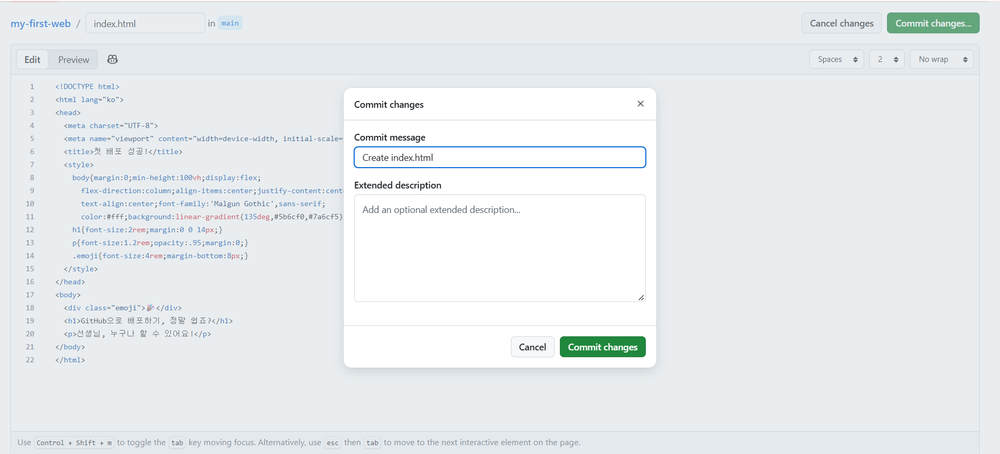
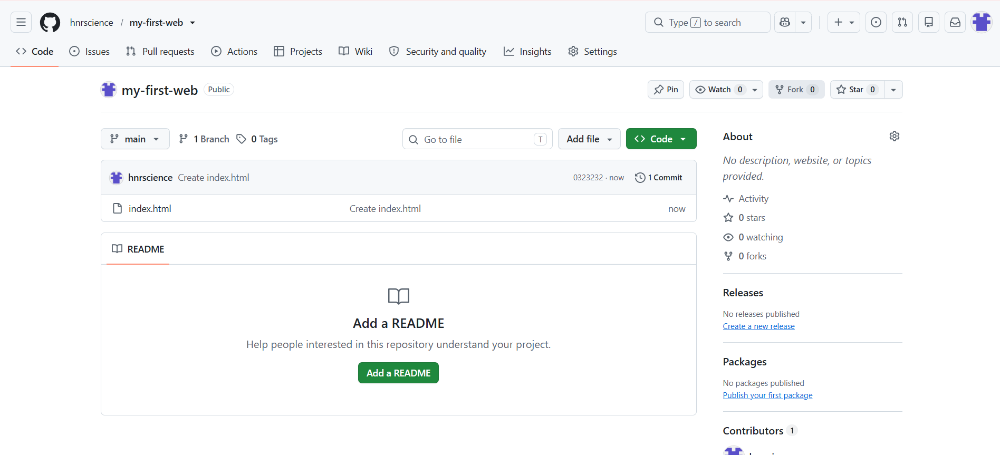
주소창에 www.naver.com 처럼 파일 이름 없이 쳐도 페이지가 열립니다. 웹사이트는 주소가 폴더(/)에서 끝나면, 그 폴더 안에서 미리 약속된 대표 파일을 알아서 찾아 보여주기 때문입니다. GitHub Pages 에서는 그 대표 파일의 이름이 index.html 입니다. (index 는 ‘목차’라는 뜻으로, 폴더의 첫 화면 역할을 한다는 의미입니다.)
그래서 대표 페이지를 index.html 로 두면 학생들에게 짧은 주소만 알려줘도 바로 열립니다. 주소가 짧을수록 받아 적거나 QR 로 만들 때 실수도 줄어듭니다.
forstudent.html 만 있습니다. 직접 눌러보세요!✓ scienceisjo.github.io/githubmanual/forstudent.html 은 열립니다.
✕ scienceisjo.github.io/githubmanual/ 처럼 끝의 파일 이름을 빼면 404 가 뜹니다.
index.html 이 보이실 겁니다. 이제 공개 스위치만 켜면 됩니다.GitHub Pages 켜기
저장소를 웹사이트로 공개하는 스위치를 켜보겠습니다! 저장소는 원래 파일을 보관만 하는 곳이고, Pages 를 켜야 GitHub 이 그 파일을 누구나 열 수 있는 웹사이트로 공개해줍니다.
파일을 올렸다고 끝난 것이 아닙니다. 인터넷에 공개하는 스위치를 켜야 링크가 생깁니다. 사진의 번호 순서대로 눌러주세요.
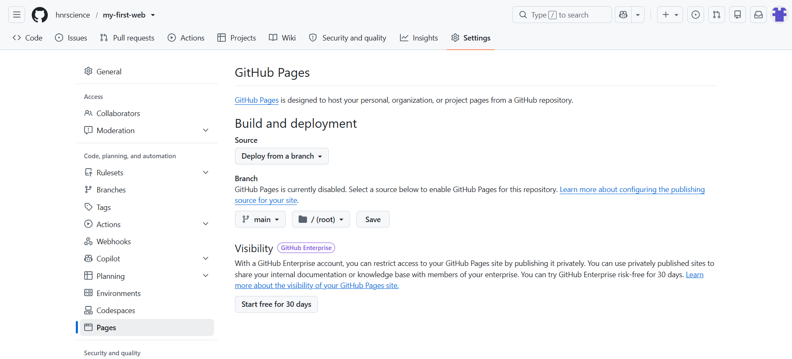
궁금하면 열기Deploy from a branch · main · / (root) 는 무슨 뜻인가요?
기다렸다가 내 링크 열기
GitHub 이 저장소의 파일을 웹사이트로 내보내는 작업(배포, deploy)이 끝나길 기다렸다가, 생긴 링크를 열어보겠습니다!
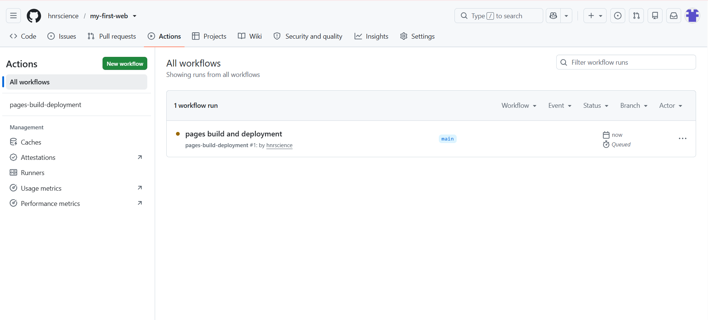
다 지어지면 아래처럼 주황 점이 초록 ✓ 로 바뀌게 됩니다.
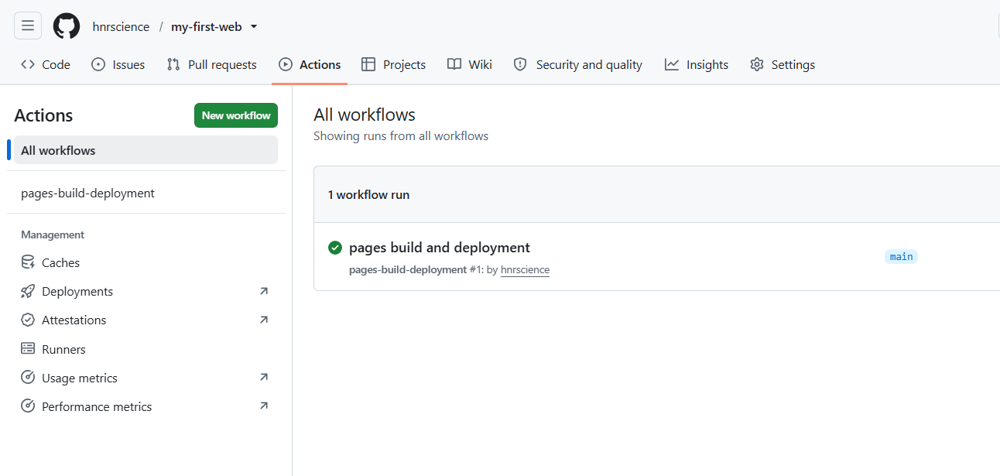
초록 ✓ 가 되면 다시 Settings 의 Pages 로 가주세요. 이미 열려 있다면 F5 로 새로고침해주세요. 화면 위쪽에 Your site is live at 상자가 생기게 됩니다.
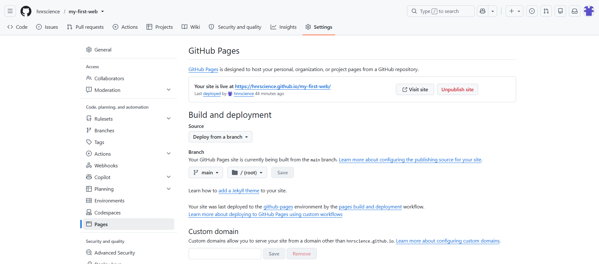
아이디와 저장소 이름을 넣으면 내 주소가 만들어집니다. 눌러서 바로 열어볼 수도 있습니다.
index.html 이기 때문입니다. 이름이 다른 파일은 어떻게 되는지 다음 단계에서 직접 해보겠습니다.두 번째 실습 · 내 파일 올리기 Upload files
이름이 index.html 이 아닌 파일을 올리고, 그 파일의 주소를 찾아 들어가보겠습니다! 직접 만든 파일을 올릴 때 가장 많이 막히는 부분입니다.
AI 로 만들었거나 다운로드한 파일은 이름이 index.html 이 아닌 경우가 대부분입니다. 그래서 이번에는 이름이 hello.html 인 파일을 이름 그대로 올려보겠습니다.
index.html은 주소만 쳐도 열립니다hello.html은 주소 끝에 /hello.html 을 붙여야 열립니다아래 다운로드 버튼을 누르면 다운로드 폴더에 hello.html 이 저장됩니다.
<!DOCTYPE html>
<html lang="ko">
<head>
<meta charset="UTF-8">
<meta name="viewport" content="width=device-width, initial-scale=1.0">
<title>두 번째 파일</title>
<style>
body{margin:0;min-height:100vh;display:flex;
flex-direction:column;align-items:center;justify-content:center;
text-align:center;font-family:'Malgun Gothic',sans-serif;
color:#1d1d1f;background:#f5f5f7;}
h1{font-size:2rem;margin:0 0 14px;}
p{font-size:1.2rem;margin:0;color:#555;}
.emoji{font-size:4rem;margin-bottom:8px;}
b{background:#fff;padding:2px 8px;border-radius:6px;}
</style>
</head>
<body>
<div class="emoji">📮</div>
<h1>두 번째 파일도 열렸습니다!</h1>
<p>주소 맨 끝을 확인해보세요 → <b>/hello.html</b></p>
</body>
</html>.html 이 숨겨져서 hello 로만 보일 수 있습니다. 그래도 진짜 이름은 hello.html 입니다. 여기에 .html 을 또 붙이면 hello.html.html 이 되어 링크가 열리지 않습니다. 받은 그대로 올려주세요.저장소 첫 화면(Code 탭)으로 돌아가주세요. 화면 왼쪽 위의 저장소 이름(my-first-web)을 누르면 돌아갑니다.
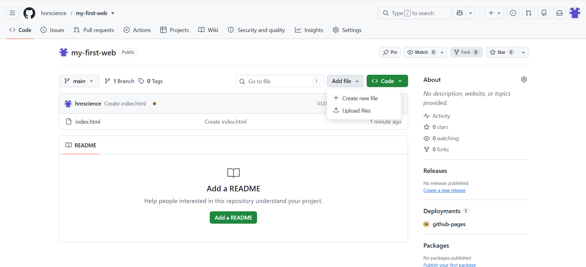
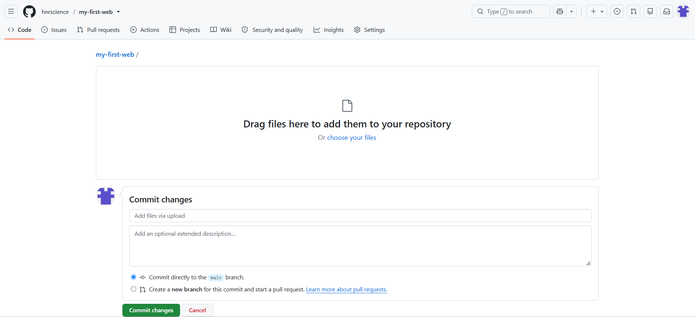
index.html 과 hello.html 두 개가 보이면 성공입니다. 파일이 바뀌면 사이트를 다시 짓기 때문에 이번에도 1~2분 기다려주세요. 5단계처럼 Actions 에서 주황 점이 초록 ✓ 로 바뀌는지 보시면 됩니다.- 5단계에서 연 내 링크를 다시 열어주세요. (Settings 의 Pages 에서 Visit site) 첫 실습의 축하 화면이 열립니다.
- 주소창을 클릭하고, 주소 맨 끝(마지막
/뒤)에hello.html을 이어서 입력한 뒤Enter를 눌러주세요. - “두 번째 파일도 열렸습니다!” 화면이 나오면 성공입니다!
index.html 이 열립니다. (3단계 축하 화면)hello.html 이 열립니다. (끝에 파일 이름을 붙인 경우)hnrscience 자리에는 내 아이디가, my-first-web 자리에는 내 저장소 이름이 들어갑니다./)에서 끝나면 대표 파일인 index.html 이 자동으로 열리고, 다른 이름의 파일은 주소 끝에 이름을 불러줘야 열립니다.- 이름을 바꾸지 말고 그대로 올려주세요. 이름을 바꾸다가
.html.html이 되는 실수가 가장 흔합니다. - 주소 끝에
/파일이름.html을 붙여주세요. 예를 들면.../my-first-web/quiz.html입니다. - 파일 이름은 처음부터 띄어쓰기 없는 영어로 정해주세요. AI 에게 만들어 달라고 할 때 “quiz.html 처럼 영어 이름으로 저장할 수 있게 해줘”라고 같이 부탁하면 편합니다.
- 대소문자까지 똑같이 적어주세요.
Quiz.html과quiz.html은 서로 다른 파일입니다. - 파일 맨 윗줄이
<!DOCTYPE html>인지 확인해주세요. 아니라면 ‘안 될 때’ 탭의 마법의 문장으로 HTML 한 파일로 다시 받아주세요.
index.html 이라면 첫 실습 파일이 그 내용으로 바뀌게 되니 참고해주세요.안 될 때
- 아래 ‘404 해결’과 ‘자주 나는 오류’를 읽고 그대로 따라해주세요.
- 예제가 아닌 직접 만든 코드가 이상하게 보이면 ‘내가 만든 코드가 HTML 이 아닐 때’를 봐주세요.
- 그래도 안 되면 맨 아래 AI 에게 묻는 문장을 복사해서 Gemini·ChatGPT·Claude 에 붙여넣어주세요.
- 마지막으로 체크리스트로 하나씩 점검해주세요.
- 저장소 첫 화면에서 올린 파일의 정확한 이름을 확인해주세요. 대소문자까지 똑같아야 합니다! (예:
game.html) - 내 링크 끝에 그 이름을 붙여서 들어가주세요.
https://(아이디).github.io/(저장소이름)/game.html
index.html 로 만드는 방법입니다. 그러면 주소 끝에 아무것도 붙이지 않아도 열립니다.- 가장 안전한 방법은 3단계처럼 하는 것입니다. 저장소에서 Add file 의 Create new file 을 누르고, 이름에
index.html을 적고, 코드를 붙여넣은 뒤 Commit changes 를 눌러주세요. - 컴퓨터에서 파일 이름을 바꿔 올리시려면 아래 ‘이중 확장자 함정’을 꼭 먼저 읽어주세요.
- 올린 뒤에는 1~2분 기다렸다가 링크를 새로고침해주세요.
Index.html 과 index.html 은 다릅니다)• 이름이
index.html.html 처럼 되지 않았나요? (아래 함정을 봐주세요)• 파일이 폴더 속에 숨지 않았나요? (저장소 첫 화면에
.html 파일이 바로 보여야 합니다)• 너무 빨리 열어보지 않았나요? (1~2분 더 기다린 뒤
Ctrl+Shift+R 로 강력 새로고침)• 저장소가 Private 이지 않나요? (Public 으로 바꿔주세요)
다운로드한 파일은 이미 .html 파일입니다 (예: myapp.html). 그런데 윈도우는 보통 .html 을 숨겨서 화면에는 myapp 만 보여줍니다.
이 상태에서 이름 바꾸기로 index.html 이라고 통째로 입력하면 어떻게 될까요?
숨겨진 .html 뒤에 .html 이 한 번 더 붙어서, 사이트가 파일을 찾지 못하고 404 가 뜨게 됩니다.
- 먼저 확장자가 보이도록 켜주세요. 윈도우 탐색기 위쪽 보기 메뉴의 표시에서 파일 확장명에 체크하면 됩니다. (맥은 Finder 설정의 고급에서 ‘모든 파일 확장자 보기’를 켭니다.)
- 이제
myapp.html처럼.html이 보이게 됩니다. - 오른쪽 클릭으로 이름 바꾸기를 누르고, 앞의
myapp만 지운 뒤index로 바꿔주세요. 점(.html)은 건드리지 말아주세요. - 진짜 이름이 정확히
index.html(점이 1개)인지 확인해주세요.
그래서 6단계처럼 이름을 바꾸지 않고 그대로 올린 뒤 주소에 이름을 붙이는 방법이 더 안전합니다.
올렸는데 화면이 이상하거나, 코드 글자만 보이거나, 열리지 않는다면 그 코드가 ‘HTML 한 파일’이 아닐 수 있습니다. GitHub Pages 는 HTML 파일만 웹페이지로 보여줍니다. 코드 맨 윗줄을 먼저 확인해주세요.
아래 마법의 문장을 복사해서 AI 채팅에 붙여넣으면 HTML 한 파일로 다시 만들어줍니다. 그 코드로 3단계(Create new file)나 6단계(Upload files)를 똑같이 진행해주세요.
지금 만든 걸 HTML 파일 하나로 다시 만들어줘. HTML, CSS, JavaScript를 전부 한 파일에 넣고, 맨 윗줄은 <!DOCTYPE html> 으로 시작하게 해줘. 다른 파일 없이 이 파일 하나만으로 작동해야 해. 파일 이름은 띄어쓰기 없는 영어로 정해줘.
index.html 과 style.css 처럼 나뉘어 나왔다면요?index.html 이 아니어서 생깁니다. 주소 끝에 파일 이름을 붙여주세요. 6단계와 위의 ‘404 해결’을 참고해주세요.index.html.html 이 됨.html 뒤에 한 번 더 붙인 경우입니다. 확장자가 보이게 켜고 점이 하나가 되도록 고쳐주세요. 위의 ‘이중 확장자 함정’을 참고해주세요..txt 가 되었거나(index.html.txt) HTML 이 아닌 경우입니다. ‘내가 만든 코드가 HTML 이 아닐 때’를 봐주세요.main 과 / (root) 를 고르고 Save 를 눌러주세요. (4단계)Game.html 과 game.html 은 다릅니다. 저장소에 보이는 그대로 입력해주세요.github.com/new 를 입력하는 방법이 있습니다. (2단계)Ctrl+Shift+R, 맥은 ⌘+Shift+R)을 해주세요.Gemini·ChatGPT·Claude 중 아무거나 열고 아래 문장을 복사해서 붙여넣어주세요. ___ 부분은 상황에 맞게 채워주시면 됩니다.
나는 GitHub Pages로 HTML 파일을 인터넷에 올리려고 해. 그런데 문제가 생겼어.
[문제: ___ ] (예: 링크를 누르면 404 File not found가 떠)
- 내 아이디(사용자 이름): ___
- 저장소(repository) 이름: ___
- 올린 파일 이름: ___ (예: index.html / game.html)
- 내가 접속한 주소: https://___.github.io/___/
- 코드 맨 윗줄: ___ (예: <!DOCTYPE html>)
차근차근, 무엇이 문제이고 어떻게 고치는지 순서대로 알려줘. GitHub 버튼 이름은 영어 그대로 알려줘.
- ✓저장소가 Public 입니다.
- ✓올린 파일이 저장소 첫 화면에 바로 보입니다. (폴더 안 ❌)
- ✓파일 이름 끝이
.html하나입니다. (.html.html·.txt❌) - ✓코드 맨 윗줄이
<!DOCTYPE html>또는<html>입니다. - ✓Settings 의 Pages 에서
main과/ (root)로 Save 했습니다. - ✓Actions 에서 초록 ✓ 를 확인한 뒤 새로고침했습니다.
- ✓
index.html이 아닌 파일은 주소 끝에 파일 이름을 붙였습니다. - ✓주소의 대소문자를 저장소와 똑같이 입력했습니다.